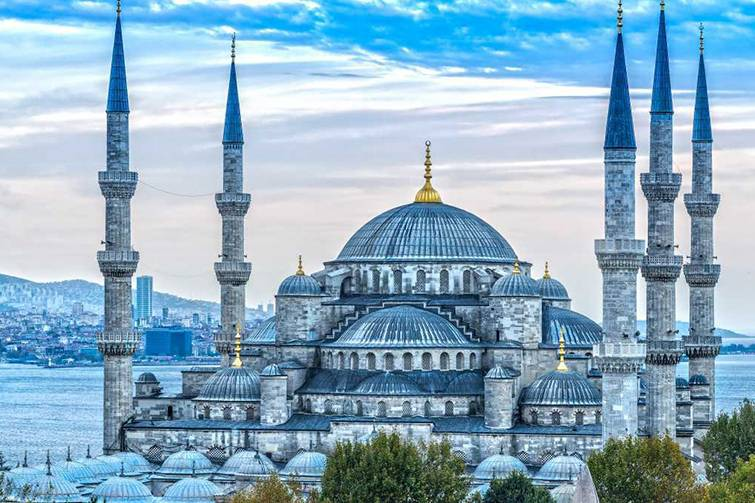
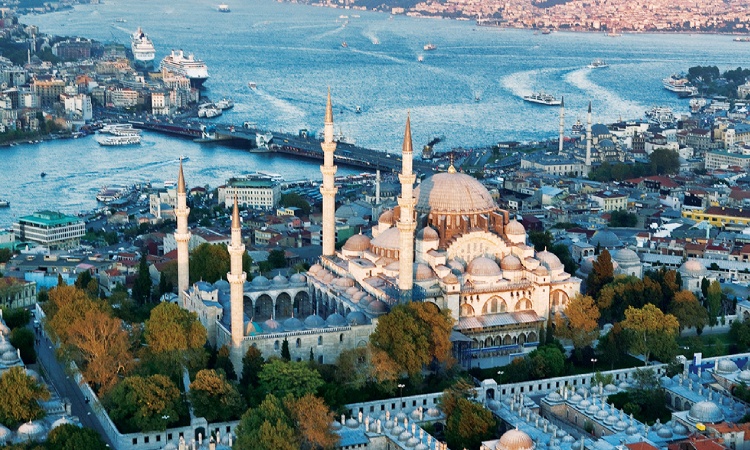
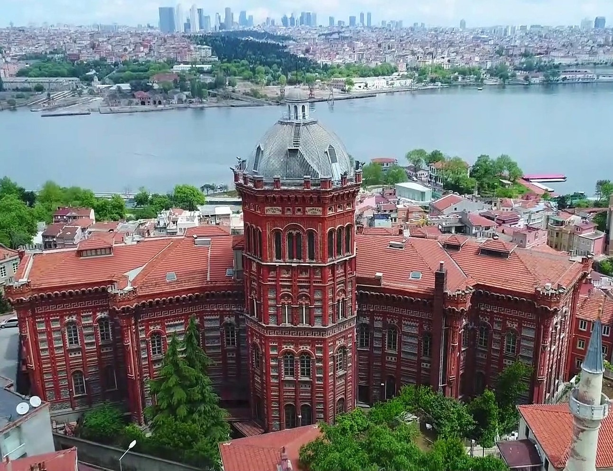
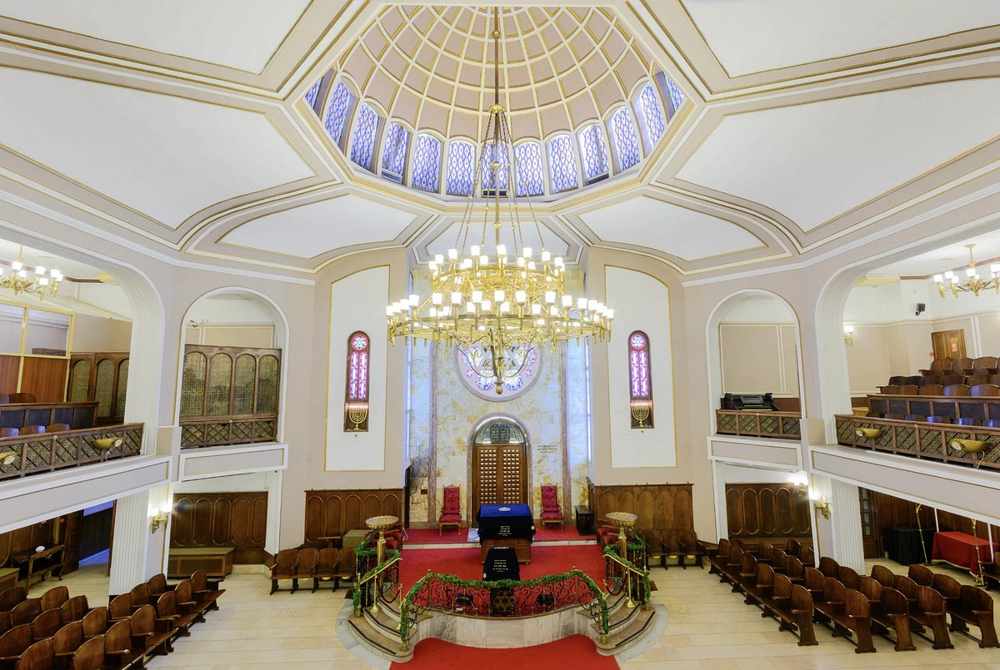

İstanbul’daki Dini ve Kültürel Yerler

Ayasofya-i Kebir Cami
Bizans döneminden kalan ve Osmanlı döneminde camiye çevrilen bu yapı, mimarisiyle dünyaca ünlüdür. Günümüzde aktif cami olarak hizmet vermektedir.
Adres: Sultanahmet, Ayasofya Meydanı, 34122 Fatih/İstanbul
Giriş: Ücretsiz (namaz saatleri dışında ziyaret edilebilir)

Sultanahmet Camii
İstanbul’un simgelerinden biri olan Sultanahmet Camii, mavi çinileriyle ünlüdür. 6 minaresiyle klasik Osmanlı mimarisinin zirvesidir.
Adres: Sultan Ahmet, Atmeydanı Cd. No:7, 34122 Fatih/İstanbul
Giriş: Ücretsiz

Süleymaniye Camii
Mimar Sinan’ın başyapıtı olan bu cami, Kanuni Sultan Süleyman adına yapılmıştır. Boğaz manzaralı avlusu ve eşsiz akustiğiyle meşhurdur.
Adres: Süleymaniye, Prof. Sıddık Sami Onar Cd., Fatih/İstanbul
Giriş: Ücretsiz

Fener Rum Patrikhanesi
Ortodoks Hristiyan dünyasının önemli merkezlerinden biridir. Aya Yorgi Kilisesi ile birlikte Fener’de yer alır ve tarihi açıdan oldukça kıymetlidir.
Adres: Balat, Sadrazam Ali Paşa Cd. No:35, Fatih/İstanbul
Giriş: Ücretsiz

Neve Şalom Sinagogu
Beyoğlu’nda yer alan ve İstanbul’daki en büyük sinagoglardan biri olan Neve Şalom, aktif olarak ibadete ve ziyaretlere açıktır. Güvenlik nedeniyle randevulu gezilir.
Adres: Büyük Hendek Cd. No:61, Karaköy/İstanbul
Giriş: Ücretsiz (Kimlik ile giriş – önceden randevu gerekir)